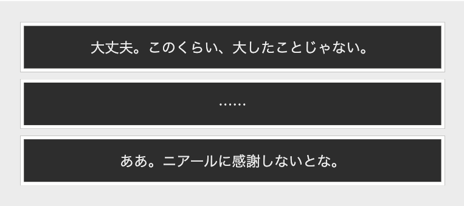

ドクター（選択肢）について

個人的に1段目がノーマルドクター、2段目が寡黙ドクター、3段目が結構ノリがいいドクター。
ドクターも好きなキャラクターの一人です。口調が可愛らしく、心からアーミヤやオペレーターたちを大切に思っているところが好きです。
寡黙ドクターが喋るとちょっと一人で盛り上がります。
※上の例は1-7戦闘前に出てきます。
用語集
アークナイツ内の特殊な用語を集め、説明をつけています
イーサンが大好きな妹の依頼で作ったページです。
ネタバレを多量に含んでいます。閲覧は十分に注意してください。